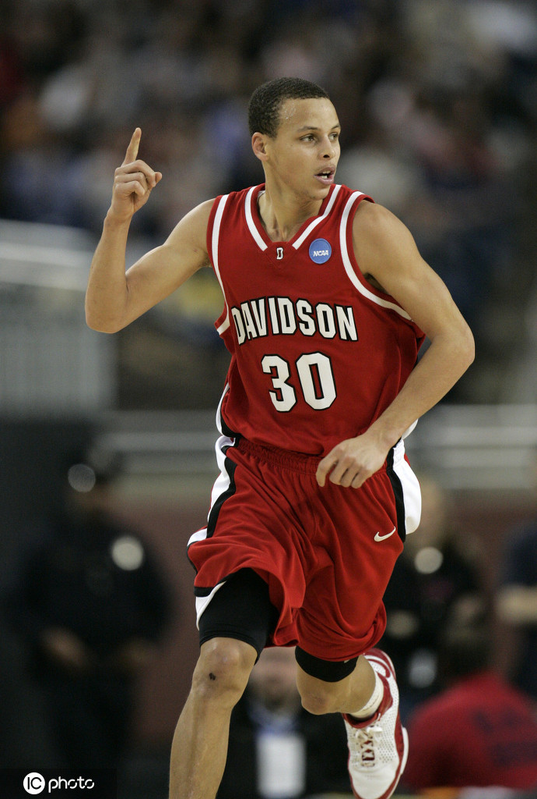

在库里高中毕业的那一年，他的身高已经达到了1.90米，虽然身高不错，但他的体重却只有70多公斤，这也让库里并不被大多数学校看好
而在07年库里参加杜克大学培训的时候，他在投篮和基本功方面都表现的不错，然而库里过于瘦弱的身体却让他被挡在了杜克大学的门外。甚至老K教练表示库里的身体太过瘦弱，这会让他很难适应NCAA的比赛强度，于是他们便放弃了库里。 其实不仅杜克大学对库里不感兴趣，很多其他大学也都对他不感兴趣，他们都没有招募库里的加盟，认为他的各个方面在NCAA都不占优势。之后库里只能选择加盟戴维斯学院。值得一提的是，这个大学在NCAA已有经39年没有取得进入32强了。
然而在库里加盟球队之后便带队创造了各种奇迹，打了各路专家、教练的脸。
在大学生涯的第一年，库里场均就能砍下21.5分，成为SEC联盟的最佳新人和得分王。并且在2007年南区锦标赛中还打破了新生三分球纪录。
在2008年，也就是库里大学的第二个赛季，戴维森学院相继战胜全国第七的冈萨加大学、NCAA二号种子乔治城大学和全美第三的威斯康辛大学，库里成了史上四位NCAA淘汰赛前四场都得到30分的球员之一。在对阵堪萨斯大学时，库里投中了赛季第159记三分球，创造了NCAA单季三分球的纪录。